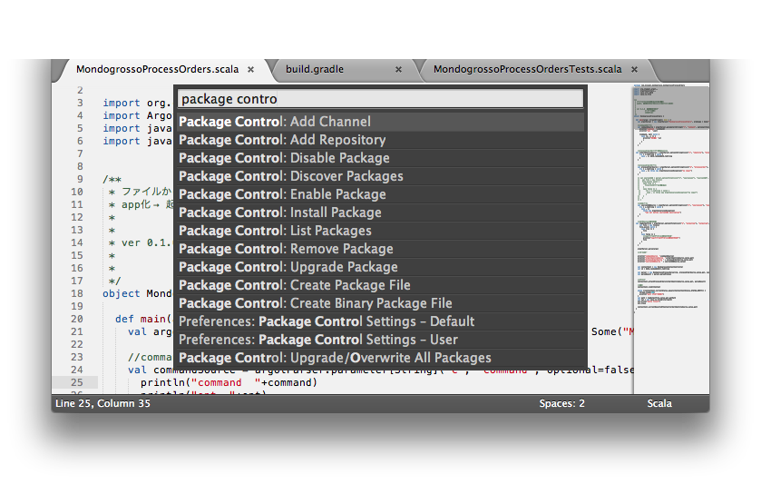

SublimeText2いいよ
概要
Eclipseの我慢できない部分に愛想をつかして、
Textmate → SublimeText 2 まできました。
Sublime text 2
個人的に思う良い所
・日本語打てる
・MacでもWinでも動く
・軽い
Eclipseを捨てるきっかけ(完全に個人的なもの + 社の都合です)
Eclipse由来の「嫌い」
GUIめんどい部分がどうしようもない
プラグイン超作りづらい
antかよ！！ (CIでそのまま回したくない、、これが致命傷だった)
+
非Eclipse由来の「嫌い」
Maven触りたくない(xml is not suitable for human)けどEclipseがMaven推し
Gradle使いたい
= よろしい、別のエディタだ。
（だってCI用に独自にビルドファイル書くとかめんどくさいじゃないですか。）
Eclipseよりいいところ
軽い、もうなにも怖くなry
起動まで1秒とか
grep音速とか
プラグイン管理系がかなり良さげ
package controlをインストールするといろいろ楽々
http://wbond.net/sublime_packages/package_control
手順は下の方に記す。
プラグイン作るの簡単げ
プラグインはだいたいPython で書かれてます。
ファイルコントロール系が無双
command + pシリーズが無敵すぎる
command + pで、「プロジェクト」中のファイルが名前推論で開けます
サイドバーがある
うれしいですね
出す/しまう は、
command + k→b
だいたい何でもキーだけで出来る
ただ、vimmerやEmacserには不満が残る出来。
矩形選択で、キーだとバグがあったりとか。
デフォルトでつんでるsyntaxの種類が多め
ある程度のプラグインの代わりはできる
command + shift + p からのsy ja とかで、、いろいろ
おまけ
日本語を打った際のcommand + z つまり「戻る」についての挙動が軽い
ブラケット畳むのが巧い。
Eclipseよりまだまだまだまだ悪い所
インクリメンタルビルド、Suggestがデフォルトだと無い
自分でごにょごにょすれば、、でもそれは解決策じゃない
→つまり他の仕組みとの連携が必要。 自分がまだ知らないだけだと思う。
JavaのMethodとかのやつは見つけたけど、個別は辛いな。
なにかグッと来るAspectを考えて纏めて入れる。
とりあえずScalaのbuildは入れる。
補完は十分に強い。
Eclipseと並んで俺が気に喰わない所
アイコンがダサい
変えてやったぜ、、、！！ ワイルドry
色んな画像が有る所を見ると着に食わない人が多いんだろうか。。。
Eclipseとは概念が違うんだけど一応該当しそうなもの
プロジェクト
あんまつかってない。良い事が有るんだと思う。
利点がわかってから使う。
How to Start
ムービー集があり、動いている所を確認できる。
http://net.tutsplus.com/articles/news/perfect-workflow-in-sublime-text-free-course/
以下を見ておけばとりあえず使えるし、モチベーションも出てくると思う。
Hello
Installation and Base Settings
Services and Opening Sublime From the Terminal
Multiple Cursors and Incremental Search
The Command Palette
Instant File Changing
Symbols
Key Bindings
Installing Plugins Without Package Control
Package Control
めんどくさければPackage Controlだけでも良いと思う。モチベーションマネージメントに。
おまけ：必須以外でムービー見た奴
LiveReload
ブラウザにプラグイン入れて、Sublimeからの入力をブラウザに則リロードさせる機構。
Regular Expressions in Sublime
Regexp。
細かいステキ動作まとめ
矩形選択：alt
押しながらD
一括置換
単語：単語に合わせてcontrol+command+g
単語→次の単語も→次の単語も、、：command+d > command+d > command+d、、
command+space + P で、パレット。
syn ja
とかでシンタックス設定(言語設定も)JavaScriptへと変更可能
文字マッチが強烈。
command + pで、ファイル一覧を移動
プロジェクト内のファイルを強烈な文字マッチで探す
command + rで、単語のマッチ
ファイル中に存在する単語(シンタックス配慮あり)をリストアップ。コード中をジャンプ可能。
control + `で、Sublimeのコンソール出る
pythonが実行できる。
sublime自体Pythonで書かれてる。
コンソールを開いたままいろいろ実行すると、実際何が起こっているのかわかる、、ような、、
関数やメソッドの実装を開く
言語に因ってはあるみたい。
Scalaはまだ無い。
Package Control
概要
wbond
http://wbond.net/sublime_packages/package_control
というサイトで、Sublime text 2のパッケージコントロールの機構をDLできる。
手順
1.top > installation に書いてある内容をコピー(最新のは変わるかもしれないのでサイトからやれ！)
import urllib2,os; pf='Package Control.sublime-package'; ipp=sublime.installed_packages_path(); os.makedirs(ipp) if not os.path.exists(ipp) else None; urllib2.install_opener(urllib2.build_opener(urllib2.ProxyHandler())); open(os.path.join(ipp,pf),'wb').write(urllib2.urlopen('http://sublime.wbond.net/'+pf.replace(' ','%20')).read()); print 'Please restart Sublime Text to finish installation'
2.Sublimetextに戻り、command + `(shift + @) でPython console開く
3.コピペして入力、Enter
4.Sublime text 2 再起動
これで、command + shift + pからの候補に、
Package Control が出るようになる。

いろいろPackageくわえてみた
全体像はこのへんから一望できる。
http://wbond.net/sublime_packages/community
InsertDate
install date で出てきた奴
任意のcodeで出来るらしい。
https://github.com/FichteFoll/sublimetext-insertdate/blob/master/Default.sublime-keymap
とりあえずキーマップ変えた。
command + shift + p でpackage開いて、
InsertDate / Default.sublime-keymap
を編集。
自分はcommand + pでできるようにしました。
(sublime内ではcommand = superです)
Terminal
現在開いているファイル箇所を基準にTerminal開く
command + shift + t
プロジェクト箇所を基準にTerminal開く
command + shift + alt + t
Scalaのコンパイルくわえたいなあ。
Gradleを使ってるので、Gradle実行のプラグインでもOK。
個人的に気になってるプラグイン
F#
https://github.com/hoest/sublimetext-fsharp
sidebar Git
https://github.com/SublimeText/SideBarGit
repl
https://github.com/wuub/SublimeREPL
Javaのmethodのsuggestするやつ
https://github.com/BoundInCode/Display-Functions
Gradle
無いようなので、、作ろう、、、！！